ASSEMBLY VARIANTS
Introduction
Assembly Variants, sometimes called design variants, cater for situations where components that exist on the schematic are not to be installed/fitted on the final PCB in certain situations. For example:
- You may have a design in which functionality is removed from a basic or intermediate version of the product.
- You may want to test two prototypes of similar but not identical circuitry to evaluate performance,noise,efficiency, etc.
- You may use pull-up and pull-down resistors to indicate the PCB/hardware revision to the microprocessor.
It is important to note that the bareboard PCB itself is unchanged between different assembly variants. Proteus will enable you to change the fitted status of components in a given configuration and will then automate the effects of this on the reporting and output systems to ensure consistency. You can also switch in alternative parts between variants provided that they have the same footprint (i.e. the board doesn't change).
Golden Rule
Always work in Base Design on the Schematic.
Base Design is the master or superset of all of the variants. This means you should always design the product in base design. This holds true even with things like debug headers that won't be present on the production PCB. You can't exclude items from base design so in this case you would most likely create two variants called TEST and PRODUCTION.
How it Works
It's really important to understand that an Assembly Variants is just a deviation from the Base Design. The Base Design must contain all of the elements and wiring and so you should always work on the schematic in Base Design. Assembly Variants are then created from the Design Explorer module in Proteus.
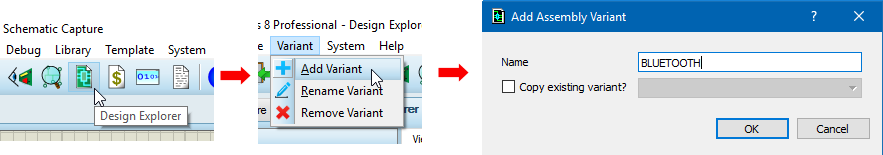
Where you have several variants you can choose to initialise a new one from an existing variant rather than from base design. This can be done from the copy existing variant checkbox in the dialogue form above. Always remember though that you can never have a part in a variant that doesn't exist in base design. All development must take place in base design.
Once created, a variant will be listed in a new column in the Design Explorer and each component in the design will have either a tick or cross to indicate whether the part is fitted or not fitted in that variant.
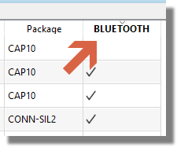
The variant that you have created will be available for selection in the variant toolbar. This combo-box is system global so switching to a different variant will affect various parts of the software (schematic, 3D Viewer, BOM, etc.)
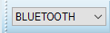
You can quickly manage variants for a group of parts by first drawing a selection box on the schematic and then filtering the search tab in the design explorer to the result set from the tagbox.
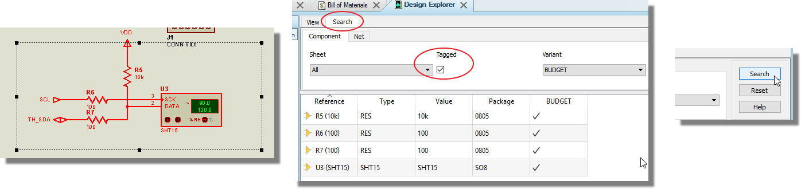
You can remove a part from a particular variant by either :
1) Clicking on it's entry in the variant column of design explorer to change to a cross.
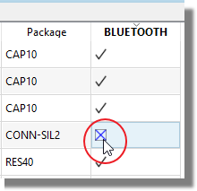
2) Switching to the variant in the variant toolbar and then editing the part on the schematic and selecting the 'Remove from Active Variant' checkbox.
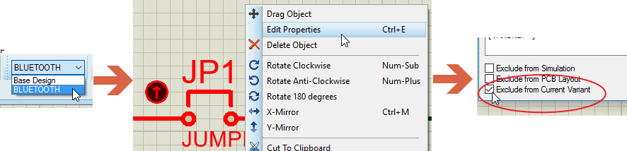
You cannot remove a part from the base design.
If you then want to add a part back into a variant simply repeat the process in reverse.
Parts that are not present in the active variant are indicated with a cross in the column in design explorer and their part reference is greyed out on the schematic.
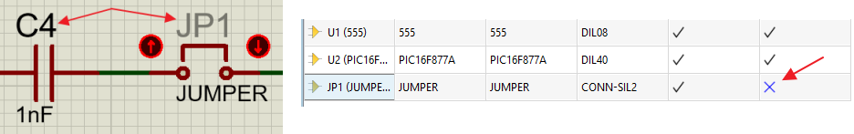
Remember that the schematic is a reflection of the Active Variant for the system as selected from the variant combo box, but that you can see a components status on all variants at the same time in design explorer.
You can add an alternative part for a passive (with the same footprint) in a variant by editing the value property.
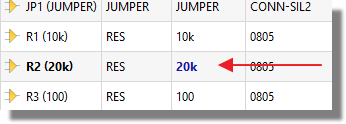
If you need to change other properties such as stock code or supplier you do so by first adding the properties as columns and then changing their values in the current variant.
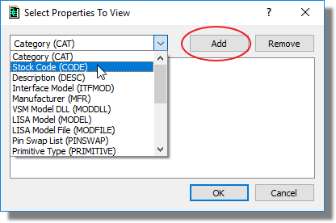
Finally, you can delete or rename a variant from the Variant menu in the Design Explorer module.
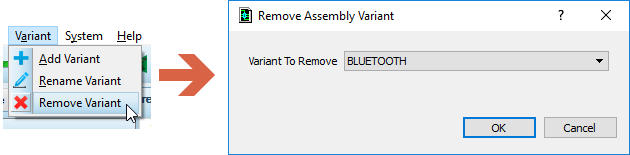
See Also:
Design Explorer Manual : Assembly Variants
Design Explorer includes several visual cues to help you with variants:
1) The active variant column header will appear in blue. If base design is selected all the variant column titles will be in black.
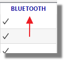
2) Properties that have been changed in the active variant will be in blue when the active variant is selected.
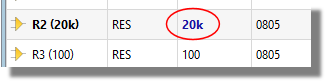
3) Components that are different in different variants will have their name in bold regardless of the selected variant.
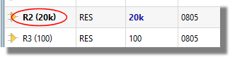
Assembly Variants & Output Files
The selection of a variant in the combo-box will affect the following files, views and reports:
Schematic Capture
The state of a component in the active variant is indicated by a dimmed part reference.
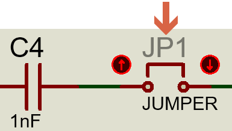
You can add the @VARIANT keyword to the Header Block in order to identify the variant during hard copy printing or simply for clarity.

See Also:
Bill of Materials
If an assembly variant is selected in the combo-box then a row with the variant name is added to the header block at the top of the BOM. All parts excluded from this variant are also excluded in the BOM report.
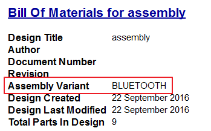
If 'base design' is selected from the combo-box then the header block will not have an extra row inserted.
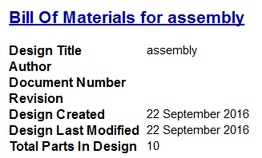
PCB Layout Module
Assembly variants have no effect on the 2D Layout by default, although the Assembly drawings generated will obviously reflect the status of the current variant.
We do support fabrication variants in so far as you can use the @VARIANT keyword in silkscreen text to allow you to identify the current variant on the layout. It does mean that in such cases you will then need to carefully manage the export of the manufacturing data files.

See Also:
3D Visualisation
If you have turned off live netlisting in the Layout module (Tools Menu) then the 3D Viewer will not receive notifications when you switch the active variant..
Parts excluded from the active variant will not appear in the 3D Viewer because they are not to be fitted in this variant. All output filesets designed for MCAD such as STEP, IGES and IDF will also have such parts excluded.
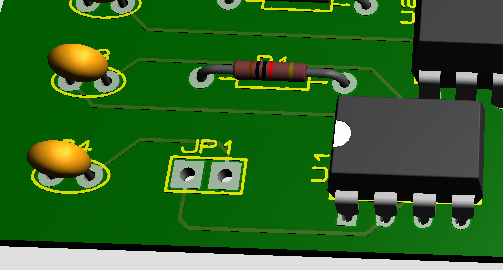
Pick and Place Files
If you have turned off live netlisting in the Layout module (Tools Menu) then you may not have the latest netlist information and the Pick and Place output may not match the active variant.
Pick and place files will not include any parts excluded from the active variant.
Reporting
Using the Project Notes module you can automatically generate a report detailing all of the differences between each product variant and the base design.
See Also: